Overview: Mostek SYS-80F
Back to Main Menu
Back to Project: Reviving a rare Mostek Computer
Basic Information:
This computer was a microcomputer development system called "SYS-80F" made by Mostek and manufactured around 1978-1980. The earliest dates in context to this system (like dates on circuit diagrams) date back to 1977. It is the european version of the AID-80F sold in America. Apparently both computers weren't very popular, there is a very limited amount of information about this computer on the internet. I found a few catalogs that had information about the boards, but also one about the system. Also some small advertisements, but sadly I wasn't able to find a price for how much this system was sold at. Here are a few pictures found in advertisements:
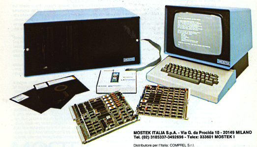
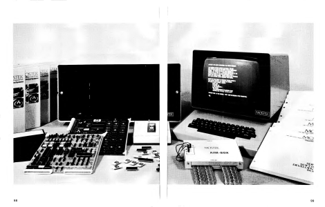
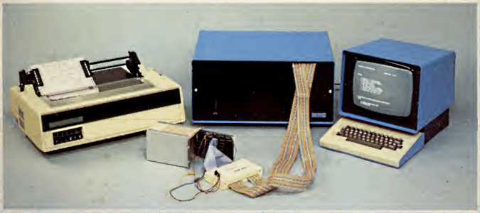
Hardware:
Computer Boards:
The system I own is equippped with a monitor, keyboard, EPROM-programmer and a bunch of floppy disks. The computer uses Eurocards with two 64-pin connectors in the back, the bottom one is connected to a backplane which conects to all other cards and the top one is individually wired to the ports in the back or the floppy drives. The following cards are currently installed:
| Name |
Description |
Specs |
Picture |
| OEM-80E |
This is the brain of the computer, its essentially a single-board-computer. It has a bunch of useful functions like a user EPROM socket, a halt indicator and a switch to change the start adress, either from zero or from the EPROMs that handle the monitor and operating system. |
Z80 CPU
16K DRAM
4K ROM
110-9600 baud serial Interface
4x 8-bit parralel ports
Z80 CTC with 4 counter/timer channels
Halt Lamp
Restart start position switch |
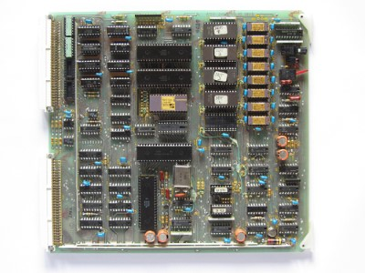 |
| RAM-80BE |
This card isn't very interesting, it only adds more RAM and four additional parralel ports to the system. |
48K DRAM
4x 8-bit parralel ports |
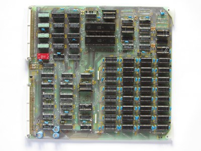 |
| FLP-80E |
This card doesnt look like much, but it is responsible for one of the key functions of the system: the floppy drives. It uses the FD1771 as a floppy controller and everything else is handled by plain logic chips. |
soft sector compatible
compatible with IBM 3740 format
capable of up to 4 drives
capable of double sided drives
full sector buffering for data |
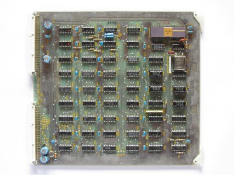 |
| VDI-P |
This is a very unique board. It's essentially a whole microcomputer which acts like a terminal. It uses the Fairchild F8 microcontroller(s) (MK3850 & MK3851) and communicates with the computer over a external serial connecion made to the OEM-80E. It interfaces with a normal ASCII keyboard (although I am unsure if the DB-25 connector in the back of the computer is a standard) and outputs video over RS170. |
24 lines x 80 char. display
5 x 8 dot matrix
110-9600 baud serial Interface
suports all 128 ASCII characters
capable of custom defined characters |
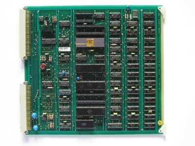 |
| Custom V24 Board |
This card was made by the schoool I found it at. I assume this card was made to compensate the lack of general purpose serial ports, because the computer only offers four unassingned parralel ports. Its not installed currently, because I dont have the need for additional serial ports and don't know how to operate it exactly. |
2x V24 serial Interfaces |
 |
Of course those aren't the only boards available, here is a quick overview of some that I don't own but are mentioned in the databooks. Mostek offered many in-circuit emulators, which can be plugged directly into the target system and then be controlled by the SYS-80F.
| Name |
Description |
Picture |
| AIM-Z80E |
This pair of boards emulates the behaviour of the Z80 CPU. The small external device is connected between the computer and the target-system. It can be controlled by the SYS-80F and behaves like a real Z80 CPU with a speed of up to 6MHz. This makes it easier to debug Z80 computers. |
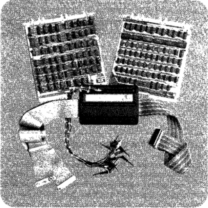 |
| AIM-7XE |
This is very similair to the booard above, but instead emulates the Fairchild F8 Microprocessor(s) (Mostek 3870). |
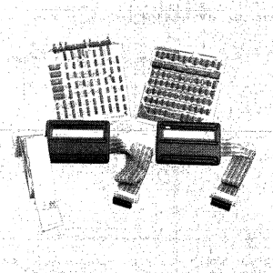 |
| AIM-68000 |
Like the name suggests, this also emulates a microprocessor, but instead a 68000. Yes, you've heard right, a MC68000 16-Bit microprocessor. According to the databooks, this board appeared around 1983. It can be executed at a speed of 10MHz and even offers a "Stand-alone" Mode in which it does not require a target-system to execute programs. |
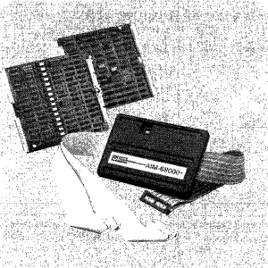 |
| DCC-80E |
This board simply provide four RS-232-C compatible serial I/O ports which can act as DTE or DCE. |
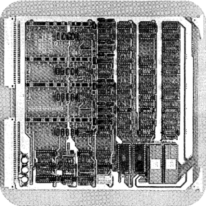 |
| A/D-80E |
These boards offer up to 32 analog inputs and two analog outputs. They are digitized by 12-Bit A/D converters and have input voltage ranges of up to ±10V. |
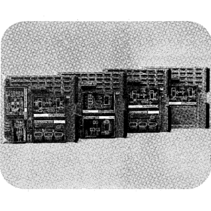 |
Power Supply Boards:
The power supply uses plug-in cards as well, although its not possible to exchange its position with another card because of the internal wiring. Also a quick overview:
| Voltage |
Description |
Specs |
Picture |
| +5V |
This is most certainly the heart of the computer, it supplys power to almost every part of the computer. It has a giant heatsink in the back thats beeing heated by a MJ11015 200W transistor, a IN6096 diode and a full bridge rectifier. Besides that, it also has a pretty extensive regualting circuit. |
Volatge: +5V
Current: 15A |
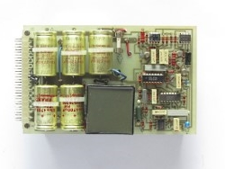 |
| ±12V |
This is a pretty compact circuit that uses the LM317 and LM337 voltage regulators. It also has two LED's in the front to indicate that the two 12V lanes are working. -12V is used by the computer boards to generate -5V for RAM and ROM. |
Volatge: +12V
Current: 1A
Volatge: -12V
Current: 1A |
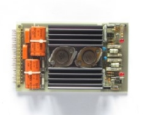 |
| +24V |
This card is really simple, it only has a few components and the 2N3055 used only has a small heatsink. The transistor is rated up to 15A, but the circuit is most likley not rated for such a high current. The +24V are not accessible on the computer boards, and are only used by the floppy drives. |
Volatge: +24V
Current: 4A |
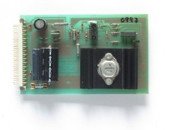 |
The Computer uses two Shugart SA801 single sided 8 inch floppy disk drives for data storage. The first drive (A / DK0) oddly is on the right side, while the second (B / DK1) is on the left.
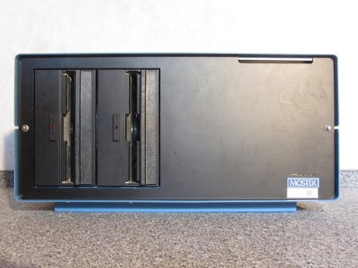
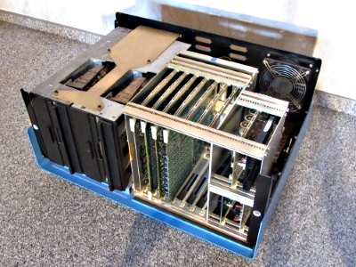
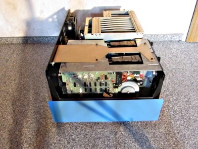
Software:
I am very lucky that such a great amount of disks had survived, including operating systems and programs. The system looks for a file called OS.BIN and uses this file to boot the operating system. A few disks are compatible with the CP/M format, while others use a format proprietary to the FLP-80DOS(It might be compatible with the IBM 3740 data entry system format, but I havent been able to check that). DeRamp made an emulator for this computer which allows you to use all floppy disk formats. It does only emulate a terminal connection to the computer, so not all applications might work as expected. The following table shows most of the interesting software, I also wrote down which format it uses and supplied a download link so you can try it yourself.
| Name |
Format |
Company |
Description |
Download |
Picture |
| FLP-80DOS |
FLP-80DOS |
MOSTEK |
This was the first operating system for this computer and has been especially made for the FLP-80 disk controller. This is why it most likley will not work on any other system than Mostek ones. |
FLP-80DOS_MOSTEK.DSK |
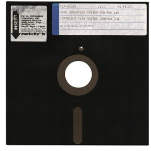 |
| FLP-80DOS |
FLP-80DOS |
ENATECHNIK |
This is essentially the same as the one above, but it says ENATECHNIK instead of MOSTEK. I assume this was supplied by the retailer who also sold this Computer. |
FLP-80DOS_ENATECHNIK.DSK |
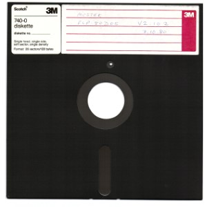 |
| M/OS-80 |
CP/M |
MOSTEK |
Because of the fast rise of CP/M Mostek probably made a operating system thats compatible with CP/M. This OS might be compatible with the CP/M format, but it can not directly run programs written for CP/M especially. |
MOS-80.DSK |
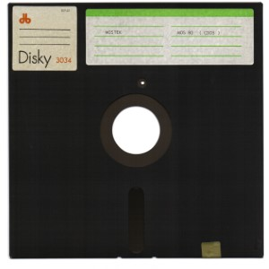 |
| M/OS-80 |
CP/M |
MOSTEK |
This is just a security copy of the original MOS-80 to avoid wearing the original disk. |
MOS-80_COPY.DSK |
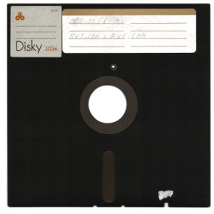 |
| CP/M |
CP/M |
DIGITAL RESEARCH |
This is a original disk that was suplied by Digital Research. Because it has not been modified it does not have the required OS.BIN file on it and thus it can't be used on this system. |
CPM2.2.DSK |
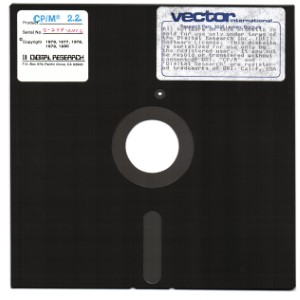 |
| CP/M |
CP/M |
DIGITAL RESEARCH |
This version of CP/M is bootable, i guess its a modified copy of the one above. |
CPM2.2_COPY.DSK |
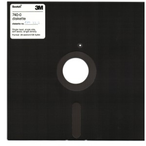 |
| CP/M |
CP/M |
DIGITAL RESEARCH |
This is the exact same version as the one above, but bootable. |
CPM2.2_SYS80F.DSK |
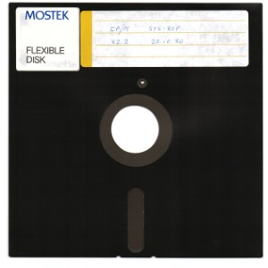 |
| CP/M Link |
FLP-80DOS |
ENATECHNIK |
You might assume this is another version of CP/M, but this is just another FLP-80DOS instance; I assume there is some program that is able to communicate to CP/M on it. |
CPM-LINK.DSK |
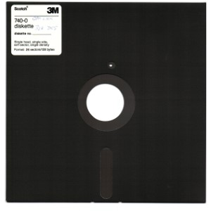 |
| BASCOM-80 |
CP/M |
MICROSOFT |
This disk only has a few files on it, one of them is named BASCOM.BIN. This program is a compiler for BASIC programs, but I dont know how to operate this program. |
BASCOM-80.DSK |
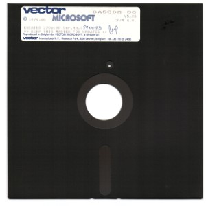 |
| BASIC GAMES |
FLP-80DOS |
MICROSOFT |
This floppy Disk has a BASIC interpreter made by Microsoft on it. It also has a great amount of BASIC-games on it, including 3D Tic-Tac-Toe, Nine Men Morris and a moon-landing-simulator. It also has a pre- comiled chess game called SARGON on it. For thoose who are interested in some games, I put BASIC-listings for download too. |
BASIC-GAMES.DSK
basic-game-listings.rar |
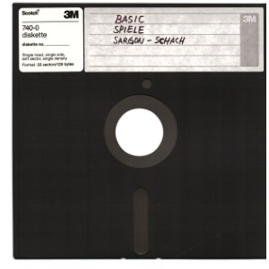 |
| BASIC INTERPRETER |
FLP-80DOS |
MICROSOFT |
This has essentiallly the same content like the disk above, but some different BASIC-games on it. |
BASIC-INTERPRETER.DSK |
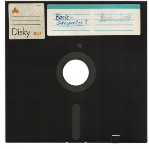 |
| PROMMER |
CP/M |
JANICH & KLAAS |
This seems to be a tool to operate some kind of PROM programmer. It does not work with the programming device by Mostek, and I could not figure out how this tool is operated or which device is required for it. If someone has information about this programmer or software, please let me know. |
PROMMER.DSK |
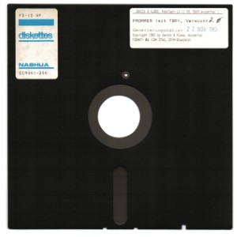 |
| WORD |
FLP-80DOS |
OLYMPIA-WERKE |
This seems to be some kind of word processing program, but it doesnt seem to start without a line printer attached. |
WORD.DSK |
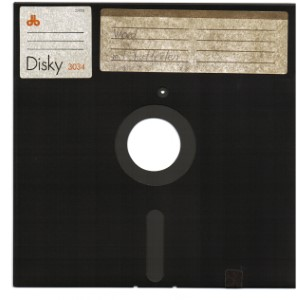 |
Manuals:
Initially I got the computer without any manuals, but thanks to Peter Ormerod I now own almost all manuals for my Microcomputer System. Some of them were already available in digital form, but some of my manuals not. I really wanted to scan them to make them available for other people and preserve them, but most services are incredibly expencive. Luckily, Mathias Ohlerich reached out to me and kindly offered to scan all missing manuals. Ian Eperson was kind enough to scan his RAM-80BE manual and sent it to me. I am very proud to present to you the (almost) complete list of manuals for the Mostek SYS-80F:
| Item |
Type |
Title |
Download |
| MK78576 |
Hardware Manual & Installation Guide |
SYS-80F Dual Floppy Disk Microcomputer System |
|
| MK78548 |
Operations Manual |
SDB-80E Software Development Board |
|
| MK78561 |
Operations Manual |
FLP-80E Flexible Disk Drive Controller Board |
|
| MK78586 |
Operations Manual |
Video Display Interface |
|
| MK79650 |
Operations Manual |
AIM-Z80AE Application Interface Module |
|
| MK78555 |
Operations Manual |
RAM-80BE Memory Expansion Board |
|
| MK78555 |
Errata |
RAM-80BE Memory Expansion Board |
|
| MK78505 |
Technical Manual |
MK3880 Central Processing Unit |
|
| MK78506 |
Technical Manual |
MK3881 Parallel I/O Controller |
|
| MK78564 |
Technical Manual |
MK3882 Counter Timer Circuit |
|
| MK78557 |
Operations Manual |
FLP-80DOS Flexible Disk Operating System V2.1 |
|
| 4420064 |
Operations Manual |
M/OS-80 Felxible Operating System Operations Manual |
|
| MK79623 |
Reference Manual |
Preliminary BASIC Manual |
|
| MK79708 |
Reference Manual |
ANSI BASIC Version 5.3 |
|
| MK78515 |
Programming Guide |
Z80 Programming Manual |
|
| MK78516 |
Micro-Reference Manual |
Z80 Micro-Reference Manual |
|
| MK79635 |
Operations Manual |
Z80 Macro Assembler Version 2.1 MACRO-80 |
|
| MK79726 |
Operations Manual |
MITE-80 Multiple Independent Task Executive |
|
| MK78522 |
Operations Manual |
DDT-80 Version 1.3 Operating System & ASMB-80 Version 1.0 Text Editor, Assembler, Linking Loader |
|
| MK79781 |
Data Book |
Mostek Microcomputer Systems Data Book |
|
The only manual I am still missing is the one for the PPG-8/16 programming device.
This page was last modified .
{kind=link}
{kind=link}
{kind=link}
{kind=link}

{kind=link}
{kind=link}
{kind=link}
{kind=link}
{kind=link}
{kind=link}
{kind=link}
{kind=link}
{kind=link}
{kind=link}
{kind=link}
{kind=link}
{kind=link}
{kind=link}
{kind=link}
{kind=link}
{kind=link}
{kind=link}
{kind=link}
{kind=link}
{kind=link}